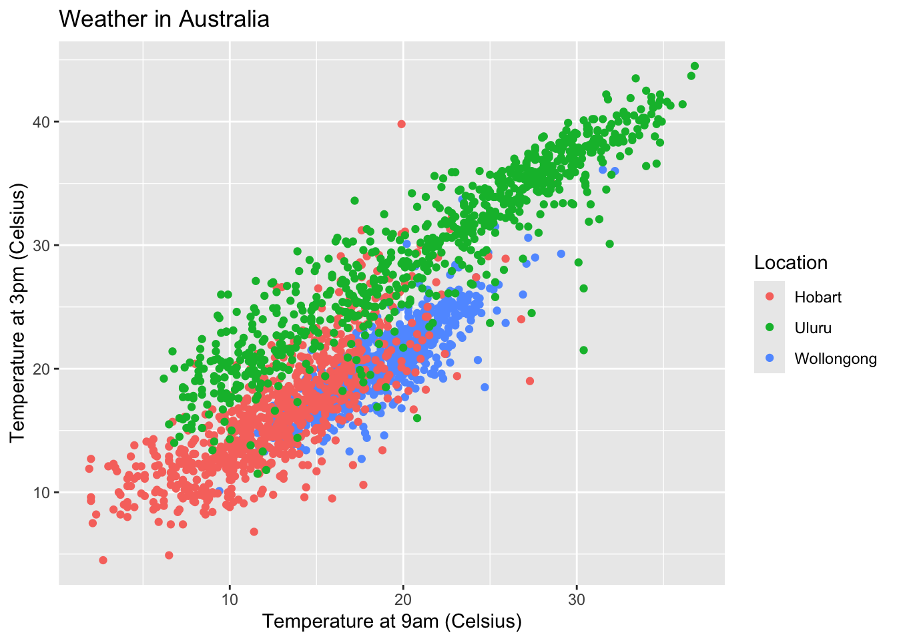
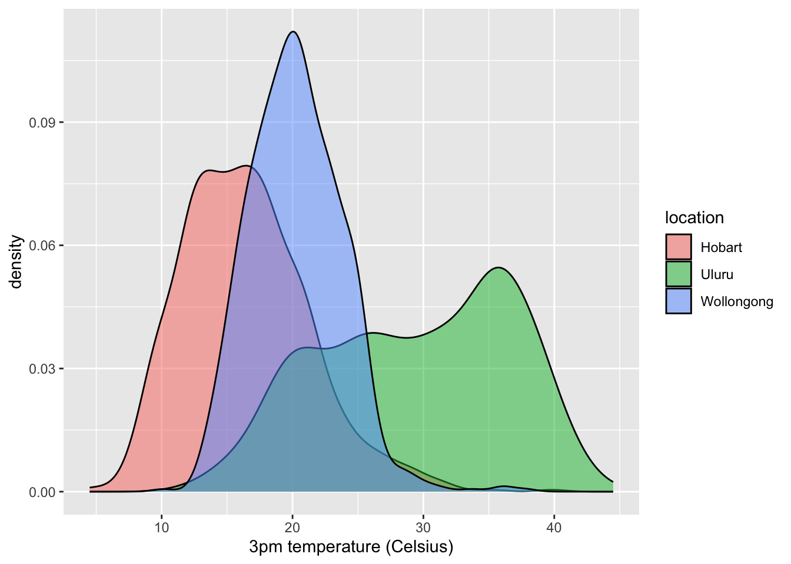

Effective Viz
Exercise 1
- This plot is fine, but we can make it look more professional.
Part a
Code

Part b
When we’re including our plot in an article, paper, book, or other similar outlet, we should (and are expected to) provide a more descriptive figure caption. Typically, this is instead of a title and is more descriptive of what exactly is being plotted.
- Add a figure caption in the top of the chunk.
- Include your x-axis, y-axis, and legend labels from Part a.
- Render your Rmd and check out how the figure caption appears.
Code

Exercise 2: Accessibility
Let’s now make a graphic more accessible.
Code

Part a
Let’s add some alt text that can be picked up by screen readers. This is a great resource on writing alt text for data viz. In short, whereas figure captions are quick descriptions which assume that the viz is accessible, alt text is a longer description which assumes the viz is not accessible. Alt text should concisely articulate:
- What your visualization is (e.g. a density plot of 3pm temperatures in Hobart, Uluru, and Wollongong, Australia).
- A 1-sentence description of the most important takeaway.
- A link to your data source if it’s not already in the caption.
Add appropriate alt text at the top of the chunk, in fig-alt. Then render your qmd, and hover over the image in your rendered html file to check out the alt text.
Code

Part b
Color is another important accessibility consideration. Let’s check out the color accessibility of our density plot.
- Run the
ggplot()code from Part a in your console. The viz will pop up in the Plots tab. - In the Plots tab, click “Export” then “Save as image”. Save the image somewhere.
- Navigate to https://www.color-blindness.com/coblis-color-blindness-simulator/
- Above the image of crayons (I think it’s crayons?), click “Choose file” and choose the plot file you just saved.
- Click the various simulator buttons (eg: Red-Weak/Protanomaly) to check out how the colors in this plot might appear to others.
- Summarize what you learn. What impact might our color choices have on one’s ability to interpret the viz?
With some of the lenses, the colors of two different locations look the same. This may make it harder for some people to see the differences between the variables, and make the plot less accessible. If it is possible to pick colors that do not have this overlap effect depending on a person’s sight.
Part c
We can change our color schemes! There are many color-blind friendly palettes in R. In the future, we’ll set a default, more color-blind friendly color theme at the top of our Rmds. We can also do this individually for any plot that uses color. Run the chunks below to explore various options.
Code

Code
# In the color scale line:
# Change "fill" to "color" since we use color in the aes()
# Change "d" (discrete) to "c" (continuous) since maxtemp is on a continuous scale
ggplot(weather, aes(y = temp3pm, x = temp9am, color = maxtemp)) +
geom_point(alpha = 0.5) +
labs(x = "3pm temperature (Celsius)") +
scale_color_viridis_c()
Exercise 3: Ethics
Let’s scratch the surface of ethics in data viz. Central to this discussion is the consideration of impact.
Part a
At a minimum, our data viz should not mislead. Reconsider the climate change example from above. Why is this plot unethical and what impact might it have on policy, public opinion, etc?

This plot is incredibly misleading because it purposefully zooms the data out to make it appear like there is less of an effect on global temperatures than there really are. When its zoomed in, it is clear to see that there has been a rise in global temperatures, and this misleading information may stall needed legislative progress to combat climate change.
Part b
Again, data viz ethical considerations go beyond whether or not a plot is misleading. As described in the warm-up, we need to consider: visibility, privacy, power, emotion & embodiment, pluralism, & context. Depending upon the audience and goals of a data viz, addressing these points might require more nuance. Mainly, the viz tools we’ve learned are a great base or foundation, but aren’t the only approaches to data viz.
Pick one or more of the following examples of data viz to discuss with your group. How do the approaches taken:
- emphasize one or more of: visibility, privacy, power, emotion, embodiment, pluralism, and/or context?
- improve upon what we might be able to convey with a simpler bar chart, scatterplot, etc?
Example: One person’s experience with long COVID
This example utilizes its visualizations to emphasize emotion and highlight important context, such as the symptoms they experienced from long COVID. This article is able to go beyond simple visualizations and tell a fuller story. The colors and the images of the different charts she collected throughout her experience highlight the emotions she experienced throughout her journey, which is lost in a simple plot.
Part c
For a deeper treatment of similar topics, and more examples, read Data Feminism.
Exercise 4: Critique
Practice critiquing some more complicated data viz listed at Modern Data Science with R, Exercise 2.5
“UK University Ratings”
Think about the following questions:
- What story does the data graphic tell? What is the main message that you take away from it?
- This graphic describes the top 20 UK universities in 2008, 2009, and 2010. It seems that the top three have generally stayed on top, changing places only with each other, while the others have changed more dramatically in the three years.
- Can the data graphic be described in terms of the Grammar of Graphics (frame, glyphs, aesthetics, facet, scale, guide)? If so, please describe.
- I don’t think this graph used a ggplot, as it includes a type of plot I am unfamiliar with (kind of like a line plot).
- Critique and/or praise the visualization choices made by the designer. Do they work? Are they misleading? Thought-provoking? Are there things that you would have done differently?
- I like the creativity of it, although it is initially confusing and hard to follow. I think that this type of plot might work with less data points, but since there are 20 observations, it gets rather crowded and hard to follow.
Exercise 5: Design Details
This final exercise is just “food for thought”. It’s more of a discussion than an exercise, and gets into some of the finer design details and data viz theory. Go as deep or not deep as you’d like here.
In refining the details of our data viz, Visualize This and Storytelling with Data provide some of their guiding principles. But again, every context is different.
- Put yourself in a reader’s shoes. What parts of the data need explanation?
- Shine a light on your data. Try to remove any “chart junk” that distracts from the data.
- Vary color and style to emphasize the viz elements that are most important to the story you’re telling.
- It is easier to judge length than it is to judge area or angles.
- Be thoughtful about how your categories are ordered for categorical data.
Getting into even more of the nitty gritty, we need to be mindful of what geometric elements and aesthetics we use. The following elements/aesthetics are listed in roughly descending order of human ability to perceive and compare nearby objects:1
- Position
- Length
- Angle
- Direction
- Shape (but only a very few different shapes)
- Area
- Volume
- Shade
- Color. (Color is the most difficult, because it is a 3-dimensional quantity.)
Finally, here are some facts to keep in mind about visual perception from Now You See It.
Part a: Selectivity
Visual perception is selective, and our attention is often drawn to contrasts from the norm.
Implication: We should design visualizations so that the features we want to highlight stand out in contrast from those that are not worth the audience’s attention.
Example: What stands out in this example image? This is originally from C. Ware, Information Visualization: Perception for Design, 2004? Source: S. Few, Now You See It, 2009, p. 33.

- The white space stands out, and the patterns created from it. I also noticed, although not immediately, that there are two pockets of equally spaced patterns, one amidst larger patterns and one admist smaller patterns, to create an illusion of relative size.
Part b: Familiarity
Our eyes are drawn to familiar patterns. We observe what we know and expect.
Implication: Visualizations work best when they display information as patterns that familiar and easy to spot.
Example: Do you notice anything embedded in this rose image from coolbubble.com? Source: S. Few, Now You See It, 2009, p. 34.

- I can’t see anything noteworthy.
Part c: Revisit
Revisit Part b. Do you notice anything in the shadows? Go to https://mac-stat.github.io/images/112/rose2.png for an image.
{kind=link}
- I think I see the dolphin in the shadows within the center of the rose.
B. S. Baumer, D. T. Kaplan, and N. J. Horton, Modern Data Science with R, 2017, p. 15.↩︎